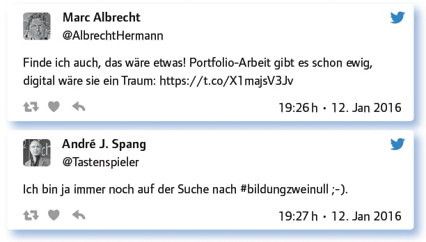
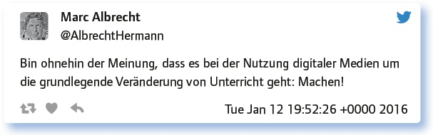

von Andre J. Spang
Der Prozess #bildungviernull – „Lernen im digitalen Wandel“ ist eine Initiative der Landesregierung NRW und bisher einzigartig. Er startete zunächst in einem Online-Partizipations- verfahren auf der Plattform bildungviernull.nrw. Das Ziel des Prozesses ist es, ein Leitbild für das Lernen im digitalen Wandel entlang der Bildungskette zu entwickeln. Dieses dient dann als Richtschnur für das politische Handeln der Landesregierung NRW. Der #EDchatDE Special war eine Sonderausgabe im Vorfeld des Kongresses „Lernen im digitalen Wandel“ und wurde live aus der Staatskanzlei NRW von Mitarbeitern der @DGNRW (Digitale Gesellschaft, Medienkompetenz, NRW) und der Staatskanzlei sowie den beiden #EDchatDE- Gründern Torsten Larbig und André J. Spang moderiert.
Die Kernfragen des Chats drehten sich um Medienkompetenz, neue (digitale) Lernorte, Erklärvideos, persönliche Lernnetzwerke und Algorithmen.
Medienkompetenz eröffnet Bildungschancen. Welche Rolle haben Eltern, Peer Group, Schule, Politik?
Die Antworten zeigen es: Alle in der Frage angesprochenen Akteure sind hier gefragt, damit
es etwas mit #bildungviernull wird – da sind sich die #EDchatDE-Teilnehmer einig.
Eltern, Schule, Politik: Alle haben Anteil an der Vorbereitung auf die aktive Teilnahme an der digitalen Gesellschaft.
Politik muss die Bereitstellung von Breitbandinternet sicherstellen! In Schule seit 1996 Glasfaserkabel (gesponsert).
Politik in Bund, Land, Kommune muss Rahmenbedingungen schaffen bei Curricula und Lehrkräftebildung, mit OER und Ausstattung.
Medienkompetenzen sind wichtig für das Leben und Lernen in der digitalen Welt!
Sie – Lehrer, Eltern etc. – müssen zusammenarbeiten.
Digitale Medien machen Vernetzung möglich. Eltern, Peers, Schule, Politik vernetzen sich, kommunizieren auf Augenhöhe.
Elternrolle: Interesse zeigen, motivieren, unterstützen, nicht verbieten.
Schule dient der Herstellung von Chancengleichheit in der digitalen Welt.
Schule braucht Mut für den digitalen Wandel und muss SuS, Eltern und außerschulische Partner in die Schulentwicklung einbeziehen.
Einfach heruntergebrochen: Algorithmen gehören dazu und man muss ansatzweise verstehen, wie sie funktionieren. Darüber hinaus ist kritischer Umgang mit den Ergebnissen einer Suche, oder den „maßgeschneiderten“ Angeboten eines Sozialen Netzwerkes notwendig. Das kann und muss man heute lernen.
Das Verständnis für Algorithmen und smartData muss Bestandteil von digitaler Bildung für alle sein.
Intelligente Suchbegriffe finden. Ich lebe außerdem nicht nur von den Ergebnissen der Suchmaschinen.
Tun sie auch jetzt schon. Deshalb brauchen wir ein Bewusstsein für Digitalität, eine digitale Ethik(-kommission).
Knowledge about the power of algorithms will help to assess the reasonability of certain actions. In short: Be careful.
Coding ist wichtige Grundlage, um Dinge in der digitalen Gesellschaft zu verstehen und zu beurteilen.
Quellen hinterfragen, reflektieren, Alternativen nutzen, Open source als default.
Erklärvideos im didaktischen Kontext – YouTube im Unterricht? Oder lieber Filmrollen aus Medienstellen?
Auf den richtigen Mix und die Vielfalt der Angebote scheint es anzukommen:
Vielleicht nicht gerade Filmrollen. Aber alles ist gut, wenn es Lehr- und Lernprozesse unterstützt.
Youtube ist ein großartiger Fundus. Hier sind aber Lehrende gefragt, die z. B. über eine Playlists vorstrukturieren.
Vielleicht könnten die Medienanstalten/-zentren Youtube-Videos kuratieren?
Do not speak disrespectfully of the film library. It has its historical justification. But today: Youtube is quicker and more diverse.
Pro Erklärvideos und Youtube: Überall v. a. verfügbar, v. a. für Schüler zu Hause.
Erklärvideos können ausgetauscht, verlinkt, kommentiert, zurückgespult werden.
Freier Zugriff auf Medien der Öffentlich Rechtlichen Anstalten wäre ja auch schon mal was.
Lasst Schüler Erklärvideos selbst herstellen!
Egal, woher der Film kommt und ob digital oder analog! Hauptsache, er ist einfach einsetzbar, ohne Auf- und Abbau.
Digitale Medien können die Basis für eine individuelle Förderung bieten – ein Mehraufwand, der anfänglich entsteht, rechnet sich auf jeden Fall, wenn die Routine mit und die Entlastung durch digitale Medien einsetzt.
Dafür brauche ich mehr als 140 Zeichen: https://t.co/LIVmNGqYR9
Mit einem Aufgabenblatt ist Differenzierung schwer. Mit digitalen Medien, unterschiedlichen Apps und dem Netz gelingt es besser.
Digitale Welt ist Segen für Unterrichtsentwicklung und individuelle Förderung!
Lernplattformen sind sinnvoll. Auch Coaching mit geeigneten Messengern.
Unterschiedliche Lernwege akzeptieren: Lernvideos, Bücher, Präsentationen, Wiki Einträge, Peer Grading.
In den letzten Wochen geisterte doch überall die David-Boody-Schule durch die Medien, so geht es wohl: https://t.co/7mlvvEJKri
#Flipped classroom, selbstbestimmtes Lernen, produzieren, Förderung unterschiedlicher Lernlevels, -typen, (Herkunfts-)Sprachen.
Learning Analytics wird bald individuelle Hilfestellung anbieten.
Antworte auf 3 Tweets unterschiedlicher Teilgeberinnen a) zustimmend, b) kritisch, c) provozierend!

Wie können Betriebe und Arbeitsplätze als Lernorte für Aus- und Weiterbildung gestaltet werden?
Hier wurden einige Möglichkeiten benannt.
Neue Programme wie „Coder in Residence“ schaffen im Mittelstand ein neues Verständnis und Umdenken für die Digitalisierung.
Co-Working Spaces und digitale Räume sind nur ein paar von vielen Ideen.
Berufliche Bildung kann in Verbindung mit wissens- und datenbasierter Prozesssteuerung Teil der täglichen Arbeitsprozesse werden.
Workplace Learning ist ideal – eine natürliche Kombination von formellem und informellem Lernen.
Raum für selbst organisiertes Lernen. Auch Gamifizierung findet bereits in Betrieben statt: https://t.co/NZc7vDD150
Erste Schritte: tatsächlich (digitalen) Bildungsurlaub nutzen, Fortbildungs-Portfolios in Betrieben.
BYOD, Lerninseln am Arbeitsplatz, Unterstützung von mobilem Lernen.
Wir haben als Schule begonnen, mit Partnern eine Software zu entwickeln. Heute Alpha bekommen, Teacherpreneurship @Prof_Kollmann
Social Media als Element der beruflichen Medienkompetenz?
Das persönliche Lernnetzwerk ist der Zugang zum lebenslangen Lernen – und: Der eigentliche Wandel findet im Kopf statt und der ist ja bekanntlich rund, damit die Gedanken ihre Richtung ändern können.
Social Media und deren kompetente Nutzung gehört heute unbedingt dazu. Teilen von Wissen, gemeinsam weiterkommen.
Verständnis und Verantwortung mit und in Social Media muss Teil von digitaler Bildung sein.
Social Media sind Teil des PLN. Social Media zum Kuratieren und Aggregieren von #Big- Data.
I think there are going to be more and more professional areas where social media presence is in a firm’s interest. So: yes.
Lernen effektiv nach konnektivistischem Prinzip. Das geht sehr gut über Social Media.
Das sollten sie sein! Heute fragte mich ein Kollege: Wie kann ich Twitter im Deutschunterricht verwenden?
Nicht immer aber immer öfter! Bücher sind immer noch auf Platz 1 bei uns.
Berufsabhängig, ein PLN kann sicher jedem Beruf nutzen, die Frage ist, welchen Gestaltungsraum man überhaupt hat.
Potenziale der Social Media für Kreativität und kritisches Denken nutzen.
Welche Anregungen, Fragen hast du sonst noch zum Thema?
Auch wenn sich die Ansätze in Nuancen unterscheiden: Vernetzt euch, macht anderen Mut und geht gemeinsam voran!
Ich hoffe, dass mehr Geisteswissenschaftler mitziehen bei #bildungviernull.
Bei #bildungviernull wirklich auch an der Situation von Bildung etwas zu verbessern: Lernkultur, Partizipation.
Kooperation von Schulträgern und Medienberatern ergibt eine gute Unterstützung für die Schule und bildet die Grundlage für politische Haushaltsentscheidung.
Ein gutes Schlusswort:

Der Chat, zu dem auch ein davor per Google Hangout stattgefundenes Liveinterview gehört, hat viele Impulse gesetzt, die zum einen für den Prozess #bildungviernull nutzbar sind, aber auch Ihnen, lieber Leser viele Anregungen im Spannungsfeld des digitalen Wandels an Schulen und in der beruflichen Bildung bzw. Weiterbildung geben können.
Es wird recht deutlich, dass das „Lernen im digitalen Wandel“ nur gelingen kann, wenn sich Lernkulturen ändern, neue Wege mit Mut beschritten werden und alle Akteure auf Augenhöhe miteinander kommunizieren und kooperieren. Dazu kommt selbstverständlich die Bereitstellung einer notwendigen Infrastruktur und rechtlicher Sicherheit.
Bei einem solch weit greifenden und umfassenden Changeprozess ist es klar, dass nicht alles sofort gelingt und die Möglichkeit der raschen Nachsteuerung gleich mitgedacht werden muss. Dazu braucht es eine neue Fehlerkultur und die Bereitschaft, vertretbare Risiken einzugehen und aus Fehlern zu lernen und sie nicht anzuprangern.
Eine große Aufgabe, die man nur mit allen Beteiligten und gemeinsam schaffen kann – die sich aber unbedingt lohnt. Einfach machen!
Link zum vollständigen Protokoll: